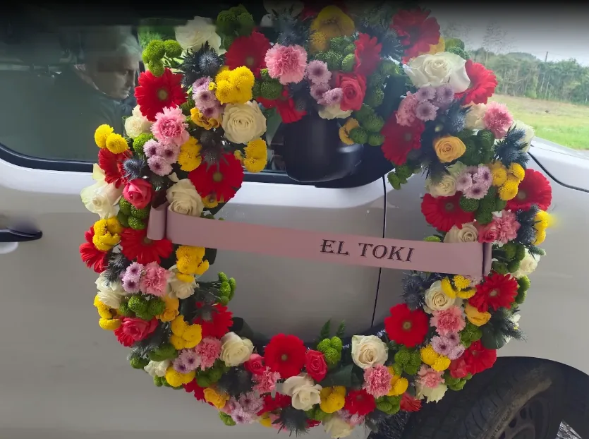
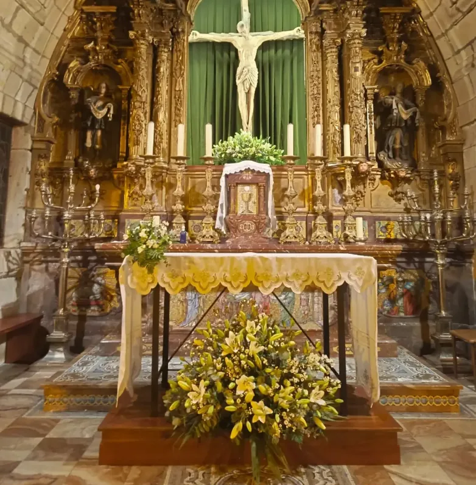
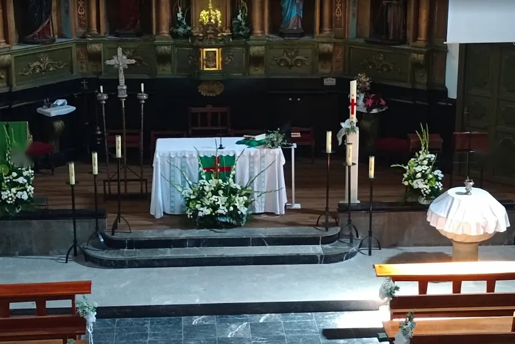
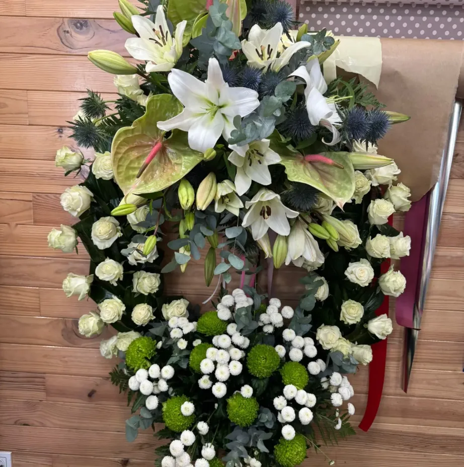

Floristería en Errenteria
Estilismo floral hecho a tu medida
Ramos a tu gusto, flores para celebrar, flores secas y ramos de novia. Pídelo por teléfono o pásate por la tienda.

Celebraciones y encargos
Flores para celebrar, a tu gusto
Si tienes una fiesta o un evento entre manos, Nekane prepara los trabajos florales que necesites, pensados para el lugar y para el momento.
Y si buscas un ramo para alguien en concreto, dinos para quién es, la ocasión y lo que te gusta, y lo preparamos a su medida.



Flores secas
Flores que se quedan contigo
Ramos de flores secas y preservadas: una forma distinta de regalar y de decorar, pensados para durar.
En la tienda también encontrarás ramos para regalar, flores y plantas variadas.


Bodas
Tu ramo de novia, pensado contigo
Una boda se decide con calma y con mucho cariño. Cuéntale a Nekane cómo lo imaginas, los colores, las flores, el estilo, y lo prepara a tu medida.

-
Ramo de novia
Con las flores que elijas, pensado para ti y para tu día.
-
Ramo de novia preservado
Flores preservadas para guardar tu ramo como recuerdo de la boda.
-
Otros elementos florales
Además del ramo, Nekane prepara otros elementos florales para la boda.


Quién está detrás
Nekane

Nekane es la dueña y la florista de la tienda. Lleva años en Errenteria preparando ramos y encargos a la medida de cada persona: le cuentas qué buscas y para quién, y ella lo convierte en flores.
Lo que cuentan sus clientes
Encantada con su trabajo me preparo el ramo de novia y fue un ramo preservado precioso. Nekane un encanto muy profesional y muy cercana (…)
Un lujo poder contar con esta floristería. Amables, profesionales, resolutivos y rápidos. Nekane un diez, amable y cariñosa. Gracias por todo. Seguiremos en contacto.
La florista más amable y sonriente.
Siempre voy con placer.
Gracias!!
Ceremonias
Ceremonias y despedidas
Flores para altares de iglesia, para el pasillo de una boda y para otras ceremonias. También preparamos ramos y arreglos florales para tanatorios: llámanos y nos ocupamos del encargo.
687 86 56 77
Lunes a viernes, 9:15–13:30 y 17:00–19:30 · Sábado, 9:15–13:30 · Domingo, cerrado



Contacté con la floristería sobre las 12 del mediodía para hacer un encargo para el tanatorio de Zetolen. Prepararon un ramo muy bonito y antes de las 14:00 lo entregaron. Buenísima experiencia, recomiendo 100%.
Pide o visítanos
Llámanos o pásate por la tienda
Llamar al 687 86 56 77Cómo pedir
- Llámanos o pásate por la tienda.
- Cuéntanos para quién es, la ocasión y lo que te gusta.
- Hacemos entrega a domicilio y también en otras localidades.
Horario
- Lunes a viernes
- 9:15–13:30 y 17:00–19:30
- Sábado
- 9:15–13:30
- Domingo
- Cerrado
Dónde estamos
Floristería Nekane Loreak
Fernandez de Landa Plaza, 1
20100 Errenteria, Gipuzkoa